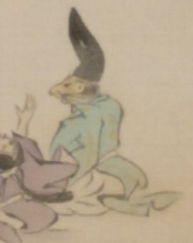

鼠のような顔をした男性。烏帽子をかぶり、公家装束をまとって座っている。目は釣りあがり、鼻が前に突き出ている。
著作者：靖々光一（山本光一）／出典：親書誌：U426_nichibunken_0098：滑稽百鬼夜行絵巻；コッケイヒャッキヤギョウエマキ／日付：2008／資源識別子：U426_nichibunken_0098_0001_0001
Copyright (c)2010- International Research Center for Japanese Studies, Kyoto, Japan. All rights reserved.